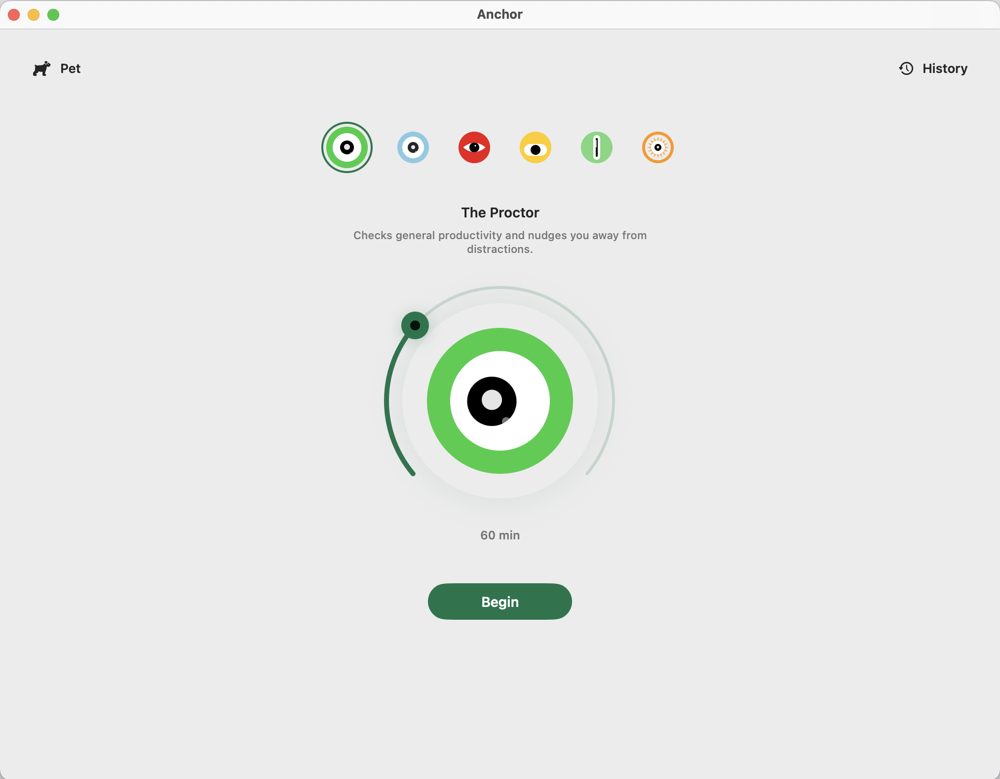
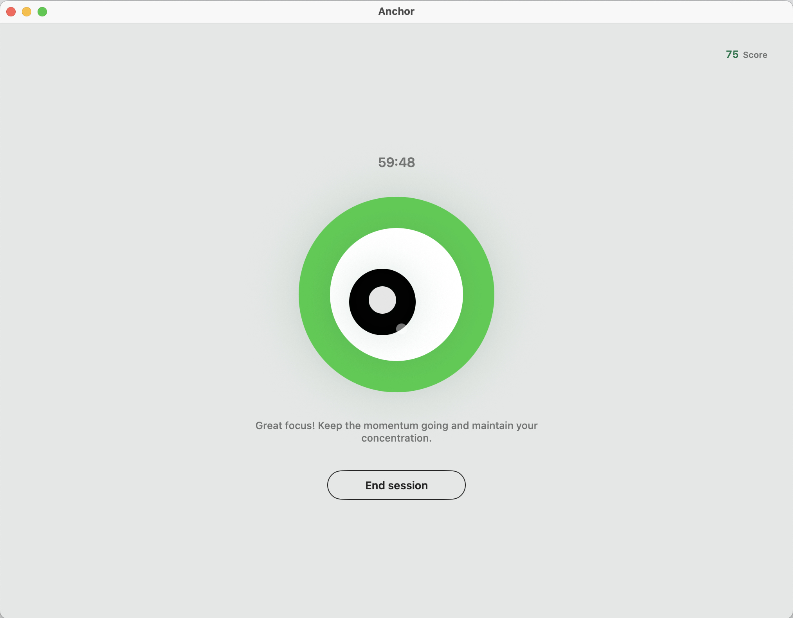
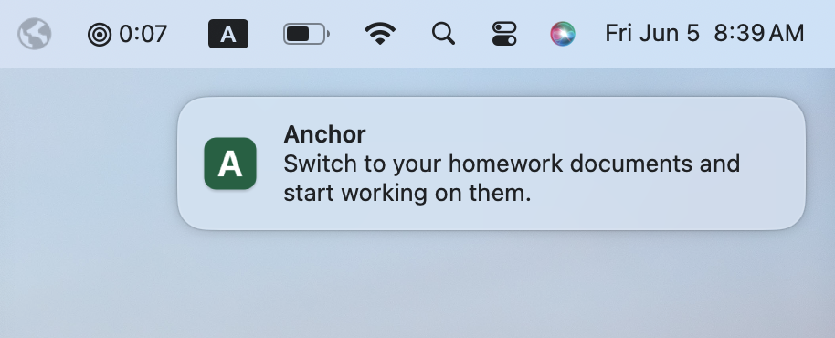
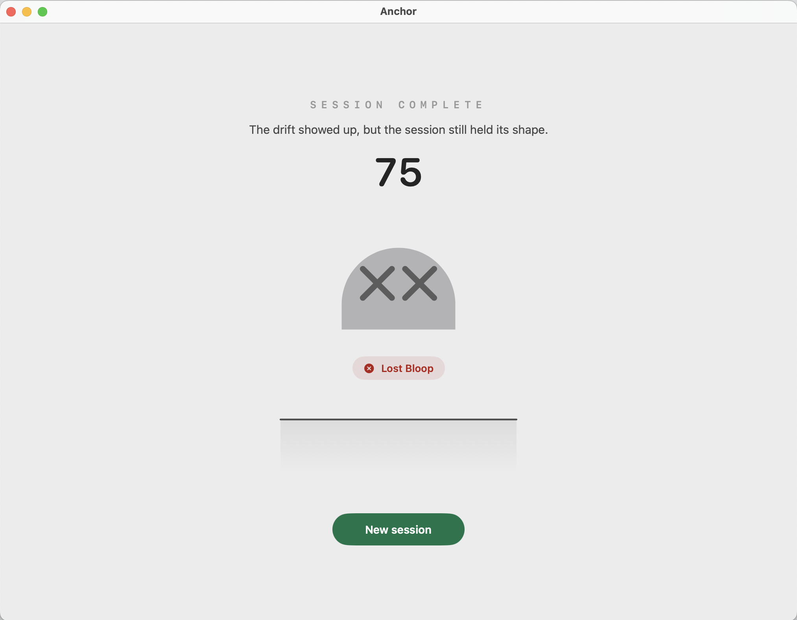
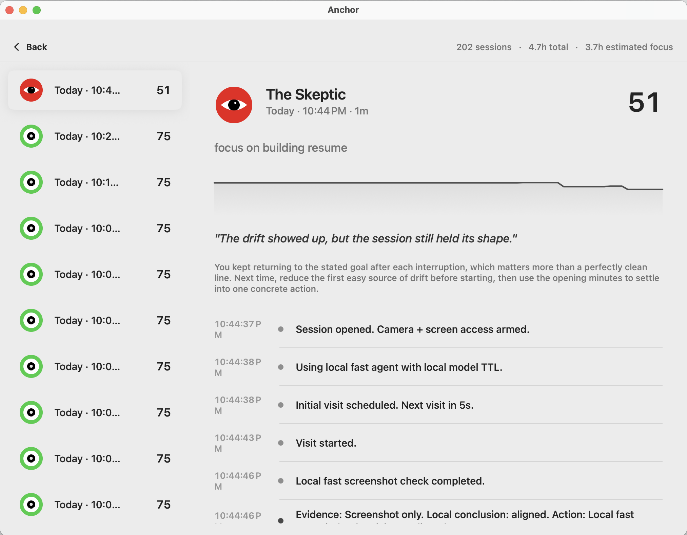
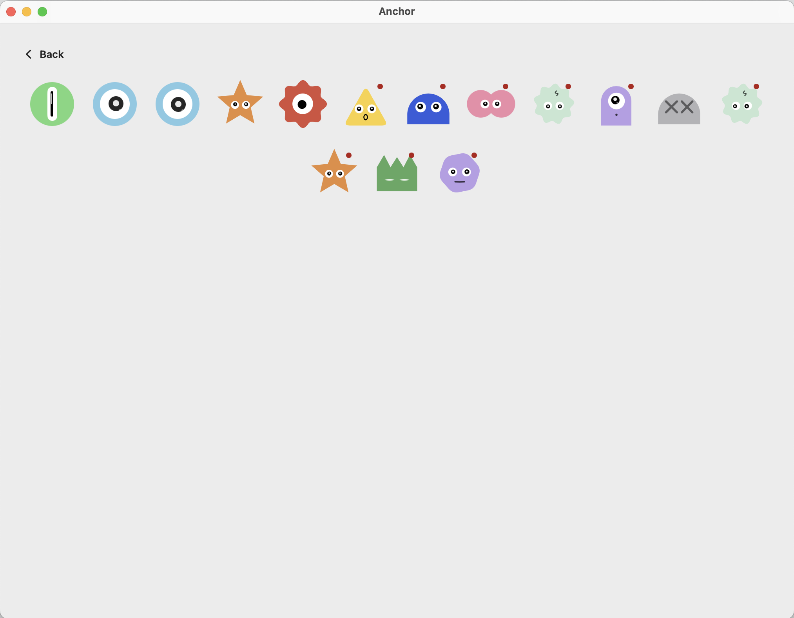

Three-second dopamine
Endless short videos train your brain to expect a fresh hit every few seconds. Real work doesn't pay out that fast.
AI focus proctor · macOS
Delete your blockers. For good.
App and website blockers fight your willpower with brute force — and lose. Anchor is an on-device AI that watches your screen, tells deep work apart from a rabbit hole, and pulls you back the second you drift.
Free · Requires macOS 14.1 on Apple silicon
The problem
Short-form video, bottomless feeds, and a notification for everything — the modern internet is engineered by some of the smartest people alive to take your attention and never give it back. For a generation that grew up inside it, sitting with one task for an hour can feel almost impossible.
Endless short videos train your brain to expect a fresh hit every few seconds. Real work doesn't pay out that fast.
Feeds never end and never repeat, so there's never a natural moment to stop — the off-ramp simply isn't there.
Every distraction lives on the same machine you're trying to work on. Willpower alone is a losing fight.
Why blockers don't work
Traditional app and website blockers are absolute and blind. They can't tell research from procrastination, you whitelist your way around them in seconds, and the instant you switch one off, you're gone. Anchor takes the opposite approach.
How it works
Anchor sits quietly in your menu bar. During a session, an on-device AI glances at your screen, compares what it sees to your goal, and only steps in when you've actually wandered.
Choose a proctor and name what you're here to do. That goal is what every check-in is measured against.

The session stays minimal — timer, live score, proctor state. Behind it, the on-device model reads your screen and judges it against your goal.

Wander into a rabbit hole and Anchor reacts in seconds — a short notification or a spoken reminder with the next concrete step back to work.

Each block ends with a focus score and an honest read on how it went — a number you can feel, and beat next time.

History keeps every score, drift line, and event together, so improvement becomes something you can actually see over time.

The long game
Years of infinite feeds don't just waste your time — they wear down your attention until focus feels out of reach. But willpower isn't fixed. Like any muscle, it grows when you train it and fades when you don't.
Every focused session is a rep. By catching drift early and rewarding the blocks you finish, Anchor makes staying on task achievable today — and a little easier tomorrow. The momentum compounds: one good session makes the next more likely, until deep focus stops feeling like a fight.
That's the whole point. Anchor isn't a cage you lean on forever — it's training that hands your willpower back.
Real stakes
Score high and you earn a collectible pet. Let a session fall apart and you can lose one — a small, real consequence that makes the next block matter. Rewards for showing up, stakes for checking out.

Private by design
The AI that reads your screen runs entirely on-device. Screenshots are analyzed locally and are never uploaded.
Your sessions, scores, history, and pets stay on your Mac.
To improve the app, Anchor collects a little anonymous data — app launches and crash diagnostics. It never collects your screen content, camera, or what you work on. Optional cloud AI features run only if you turn them on with your own key. Read the privacy policy.
A native macOS app for students, builders, and anyone done losing their best hours to the feed.